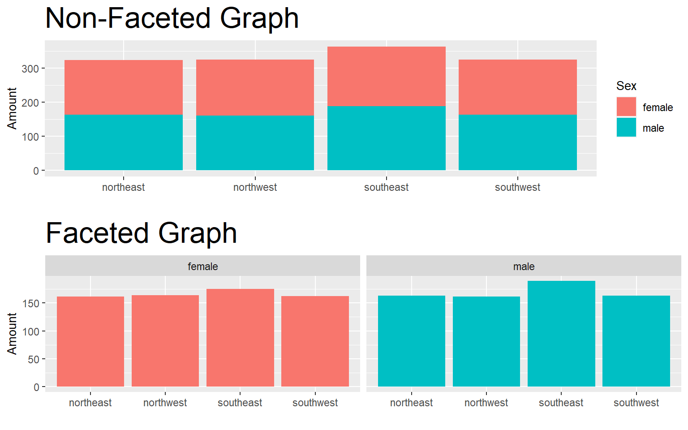

Coloring
the color and fill arguments are accepted inside the aes()
color is the boarder color
fill is the fill color
you can set hard colors or set it to a column in your dataset
R accepts color names in quotes and hex codes
scale_fill_manual()scale_color_manual()
Labeling
labs()
Explanation
The labs() function is used to add label to the plot like the x-axis, the y-axis, and title.
Example

Faceting:
facet_wrap() & facet_grid()
This of faceting as a third variable. We can set the x and y axes to see information, add color to make it
X Y: - color - faceting
facet_wrap()andfacet_grid()
Code
color <- ggplot(dat, aes(x = region, fill = sex))+
geom_bar()+
labs(title = "Non-Faceted Graph", x = "", y = "Amount", fill = "Sex")+
theme(
title = element_text(size = 20),
axis.title = element_text(size = 10),
legend.title = element_text(size = 10))
facet <- ggplot(dat, aes(x = region, fill = sex))+
geom_bar()+
facet_wrap(~sex)+
labs(title = "Faceted Graph", x = "", y = "Amount", fill = "Sex")+
theme(
title = element_text(size = 20),
axis.title = element_text(size = 10),
legend.title = element_text(size = 10),
legend.position = "none")
ggpubr::ggarrange(color, facet, nrow = 2)
Themes
The following theme options affect all the non-data aspects
theme_bw()theme_linedraw()theme_light()theme_dark()theme_minimal()theme_classic()theme_void()theme_test()
Next week we’ll get into colors, gg_text()/gg_label(), labs(), themes(), legend?, facet_wrap(), geom_boxplot() is often used with geom_jitter() to make powerful visualizations.